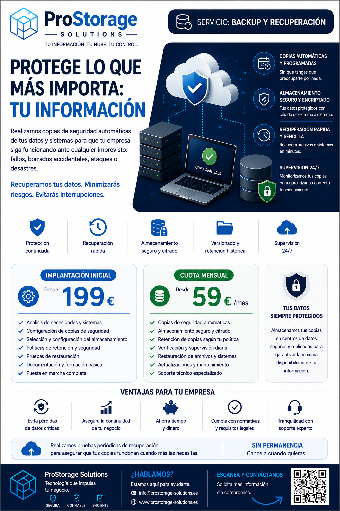

Realizamos copias de seguridad automáticas de tus datos y sistemas para que tu empresa pueda recuperarse ante borrados, fallos, ataques o cualquier imprevisto.

Recuperamos archivos eliminados por error antes de que se conviertan en un problema.
Protegemos la información ante averías, errores de sistema o pérdida de dispositivos.
No basta con hacer copias: también hay que comprobar que se pueden restaurar.
Reducimos el impacto de incidencias que puedan afectar al funcionamiento de la empresa.
Configuración de copias programadas según las necesidades de tu empresa.
Conservamos versiones anteriores para poder recuperar datos de diferentes fechas.
Recuperación de documentos, carpetas o datos ante incidencias.
Revisamos el estado de las copias para detectar errores o fallos.
Análisis de necesidades, configuración de copias, almacenamiento, retención y pruebas de restauración.
Desde 199 €Copias automáticas, supervisión, mantenimiento, soporte y restauración de datos.
Desde 59 €/mesFacturas, contratos, documentos internos y archivos de clientes.
Protección de información sensible y recuperación ante errores humanos.
Empresas que actualmente dependen de copias manuales o incompletas.
Cuéntanos tu caso y te ayudaremos a diseñar una estrategia de copias de seguridad adaptada a tu negocio.
Solicitar informaciónEn almacenamiento seguro externo al sistema principal para mejorar la protección.
Sí. Podemos recuperar archivos, carpetas o datos específicos según la política configurada.
Sí. Se programan para ejecutarse de forma automática.
No. El servicio es flexible y adaptable a cada empresa.